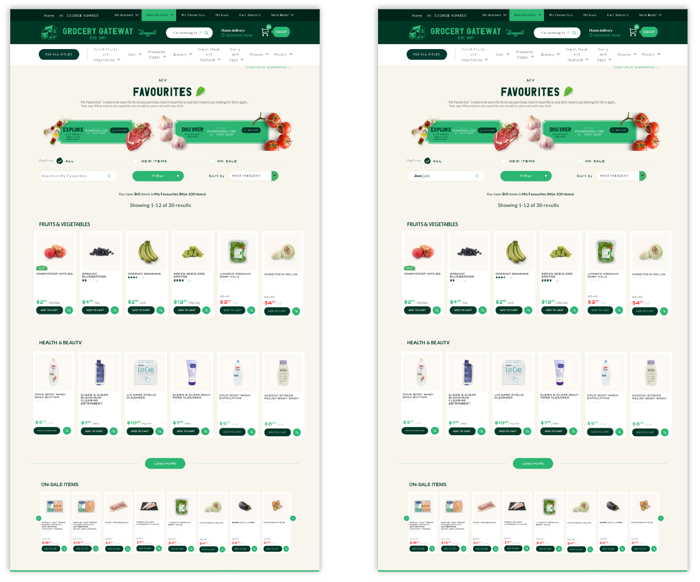

Grocery Gateway
Grocery Gateway is Canada’s largest online grocery delivery service.They provide personal shopper packs customers order with care and their delivery team brings consumers groceries right to their kitchen table.
TEAM
Sara Cheng, Jinyun Park, Chih-Ling Kuo
DATE
December 2018
CONTEXT
Grocery Gateway collaborate with Humber UXD students to help them facilitate the My Favorites users to view more products in other categories. The company wish us to remove the barriers between existing customers and new products. Furthermore, finding out issues of App and website and improve them become more accessible for all the users.
SKILL
User interview
Personas
Task Evaluation
Affinity diagramming
Journey maps
Lo-Hi Fidelity prototype
Formal usability testing
What are "My Favourites"?
My Favourites
“My Favourites” is where we save the items you purchase most frequently so you don’t need to go looking for them again. Your top 100 products are saved for you to add to your cart with one click. — Grocery Gateway

The website page of My Favorites section
Problem Definition

Photo by NordWood Themes on Unsplash
The Narrow Sight of My favourites
For My favourites users, they are used to order the items in My favourites.Nevertheless, they reduce the opptunity to see more items out side their favourite section.
How might we reimagine ‘My Favourites’ in a way that allows users to shop in an efficient manner while exposing them to new products and moments of inspiration leading to increased incremental sales and brand loyalty?
PROCESS
Design Process
phase 1:Inspiration
User Interview
While conducting the interview, we have to try to make the participant feel comfort without having nervious. Also, don't make yourself looks nervious too. Your preformance might influlence the participant.
Task Evaluation
Task Evaluation form is a useful toolkit to help you list out each step that the user did, and analysis the issues. On this form, we have to fill out the steps, user independency, and time. After we fill out the form, the flow and the issues will appear obvious.

Task Evaluation Form

User Interview
phase 2:Synthesis
Persona
A persona is a representation of a type of customer. Personas answer the question, “Who are we designing for?” and they help to align strategy and goals to specific user groups.— Gregg Bernstein

Persona
User Interview Insights
Tagging of User Interview Insights
After user interview, we transcribe the interview content from our recordings. Then, we used these 8 labels to help us organize the scripts. We wrote down all the scripts on the memos and arranged them on the wall. The scripts which have the same label were put together as you can see.
Affinity Diagramming
After the Tagging.
We came out insights from these labelled scripts.
Then, we wrote down our insights and used them to create an Affinity Diagram.
After we made the relevant insights into groups, we realized them can be three categories.
The three categories are User, My favourite, and Shopping experience of Grocery gateway.
In the category of user, the insights are all about participant herself. What she usually does, who she interacts with and how her behaviour change.
In the category of My favourite, these insights come from how user using My favourite, what are her expectation and frustration.
For the category of Grocery gateway, the insights are about her shopping experience of overall Grocery Gateway.

Affinity Diagram
Executive Research Summary

phase 3:Ideation
Customer Journey Mapping
Customer Journey Map
A customer journey map is a story designed to provide insights into the customer’s journey. It is not designed to represent a 100% real experience with all its nuances.— Paul Boag
Wireframe
Wireframe My faviourites section of the mobile App
Phase 4: Prototyping
Digital Prototyping
Prototyping of Mobile APP

Prototyping of website
Formal Usabilty Testing

Reiterate Design

Redesign Prototype of Mobile APP

Redesign Prototype of Website
Next Steps
Formal usabilty testing with more users
Reiterate
Final render
Reflections